Daily Dose
Interaction design for senior medication adherence
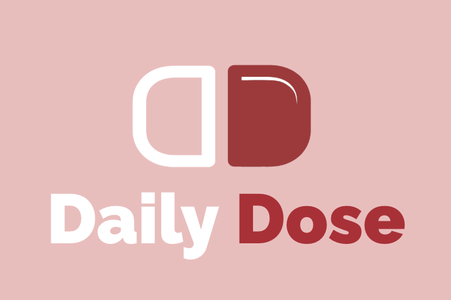
Overview
Daily Dose is a medication reminder app designed for seniors first. Our COGS 120 team identified gaps in existing medication apps, synthesized published research on adherence and accessibility, and designed lo-fi and hi-fi prototypes grounded in HCI principles.
This case study walks through the problem, what existing tools get wrong, how we structured the experience, and the three core interaction areas we designed: reminders, accessibility, and medication support.
The Problem
Seniors often struggle to manage medications. Missed doses, confusion, and difficulty reading small labels are common. Digital tools exist, but many older adults find them too complex. People instead rely on written notes and basic alarms that lack reminders, real-time information, and personalized support.
Poor adherence can lead to hospitalizations, preventable drug interactions, and higher healthcare costs, especially as cognitive decline and forgetfulness make routines harder to maintain.
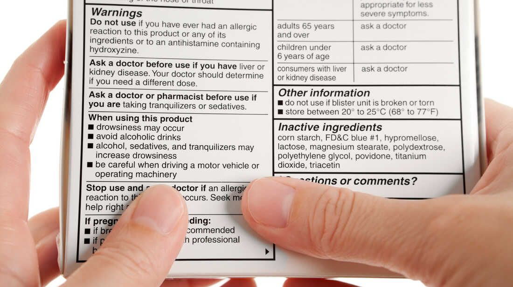
Where Existing Apps Fall Short
We reviewed Pillboxie, MyTherapy, and Medisafe and mapped each limitation to an HCI principle. These critiques directly shaped our design priorities.
Pillboxie: weak reminder system
Principle violated: Visibility of system status
No confirmation that medication was taken, no feedback when a dose is missed, and no persistent reminders or progress tracking.
MyTherapy: no drug interaction warnings
Principle violated: Error prevention
Users are not alerted to potentially dangerous drug interactions before harmful combinations occur.
Medisafe: limited senior usability
Principle violated: Match between the system and the real world
Testing focused primarily on hypertension patients, leaving gaps for seniors with diverse conditions and cognitive needs.
What the Research Told Us
We synthesized published work on medication adherence and barriers for older adults. We did not conduct our own user interviews or usability tests as part of the documented deliverables.
- Existing medication apps often fail on navigation, visibility, and transparency for older adults.
- Patel et al. found that completing a task in electronic adherence products takes an average of 12.7 steps and 15.19 minutes.
- Less than one-third of older adults who own mobile devices use health apps.
- Effective design for seniors emphasizes large typography, high contrast, reduced clutter, voice support, and personalization.
Process
We started on paper, mapped the information architecture, built a shared visual system, and explored core flows in lo-fi before moving to hi-fi screens.
Early exploration
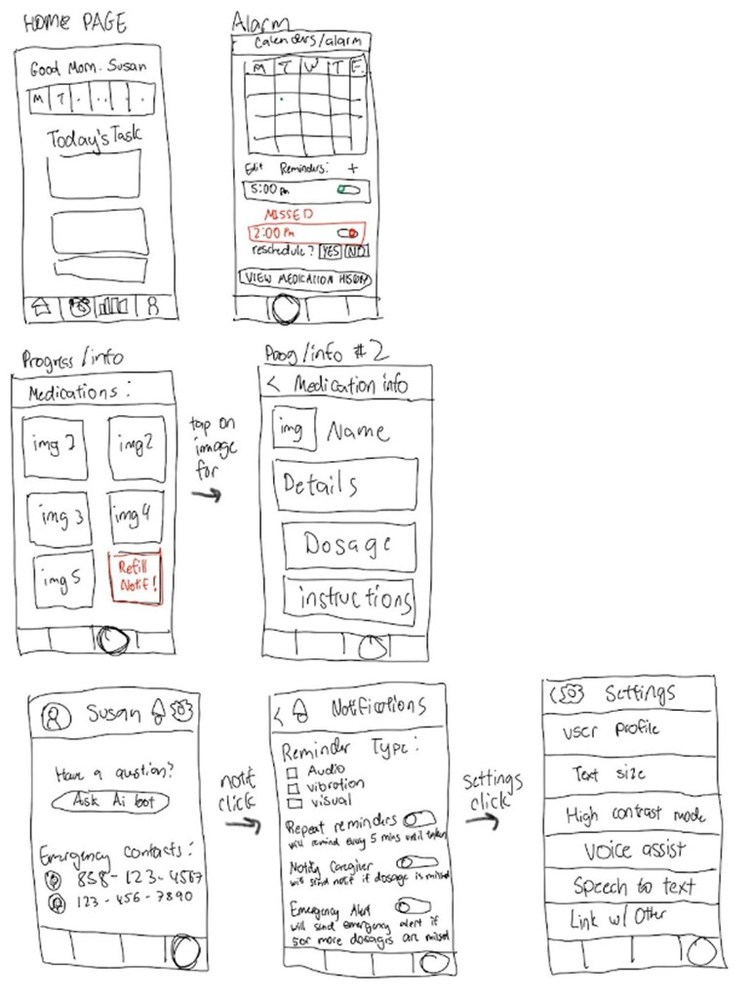
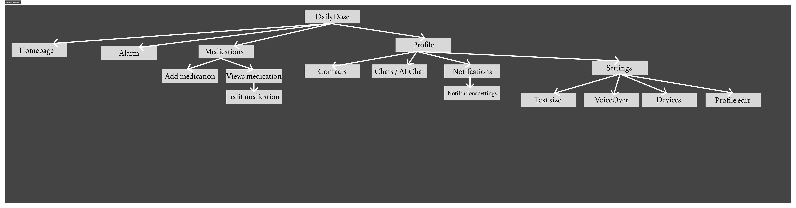
Visual system
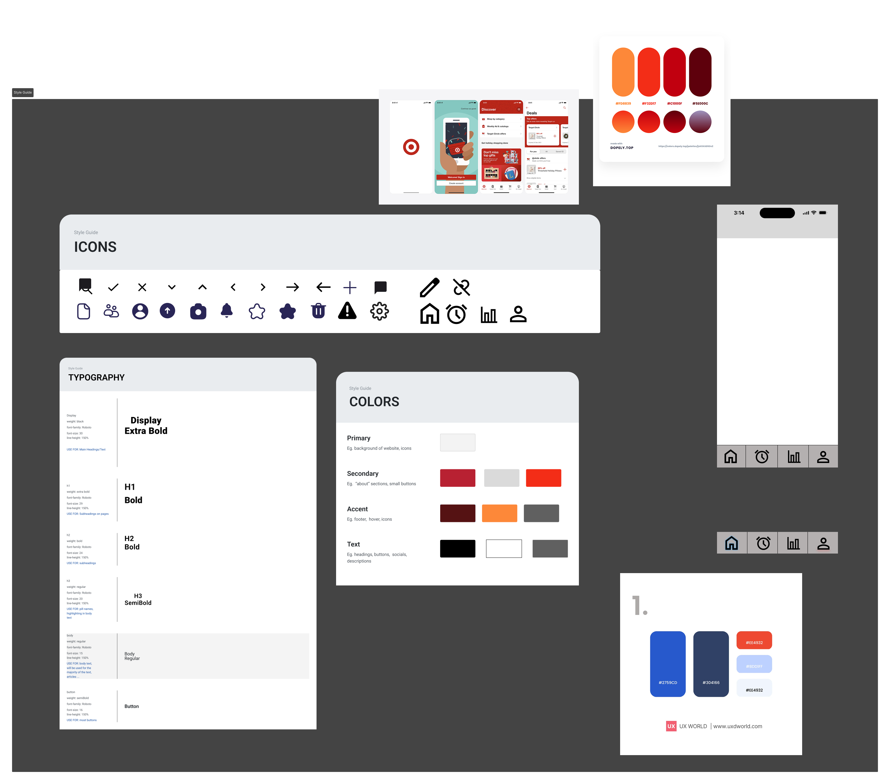
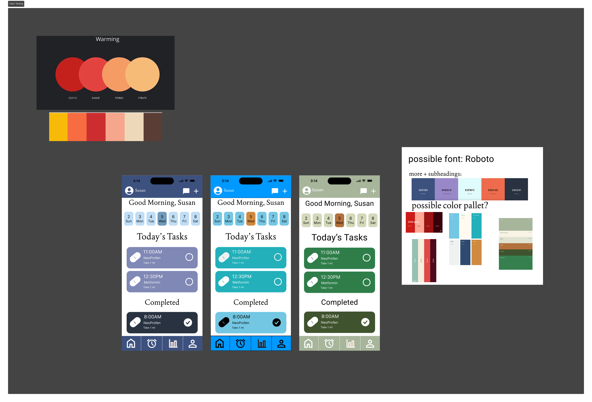
Lo-fi wireframes
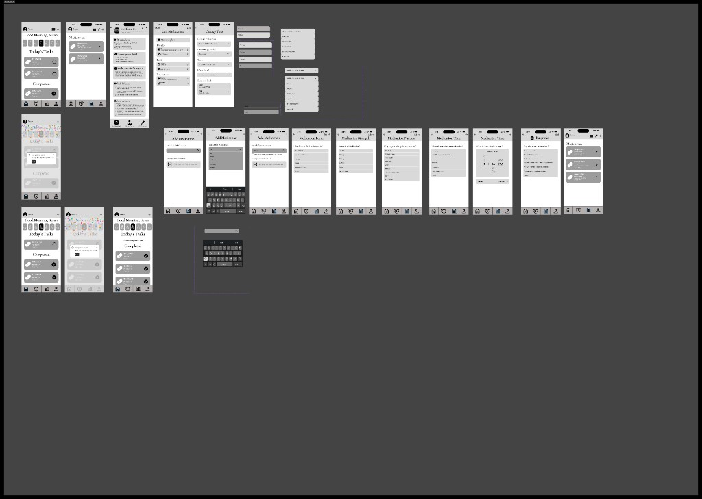
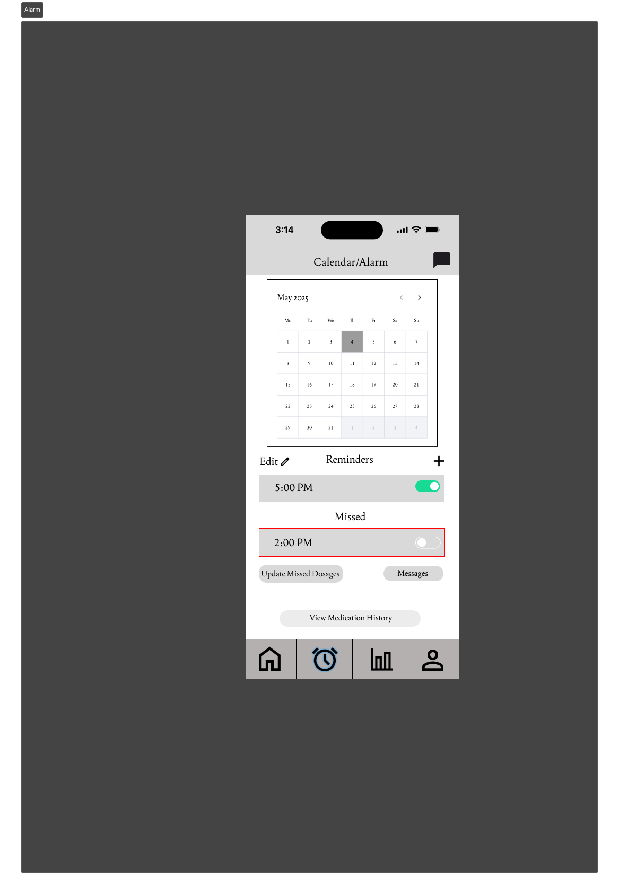
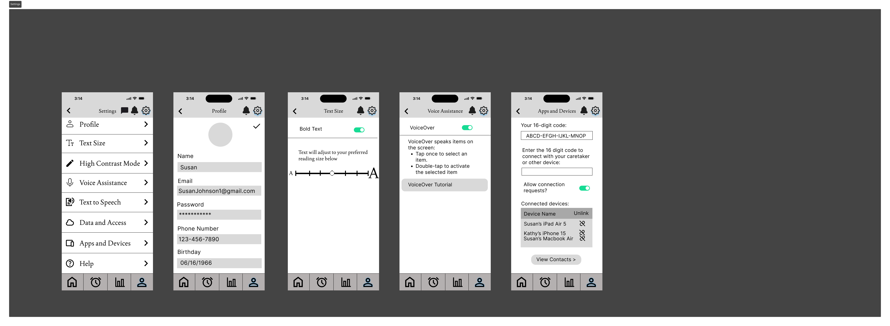
Key Interactions
Each section below addresses one competitor gap with a specific interaction design response, shown with the hi-fi screens from our presentation.
1. Reminders and feedback
Addresses: Pillboxie’s weak reminder system
Make dose status visible and completion rewarding
Problem: Users cannot tell whether today’s medications are done, overdue, or still pending.
Decision: Show today’s tasks on the home screen with tap-to-complete cards, celebration feedback after each dose, and a reminders view with active and missed sections.
Interaction: Tap a task to mark it complete. Optional missed-dose re-ring keeps reminders active until confirmed. Alarm controls limited to edit, add, and update missed doses.
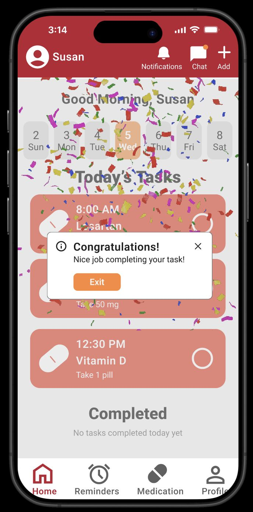
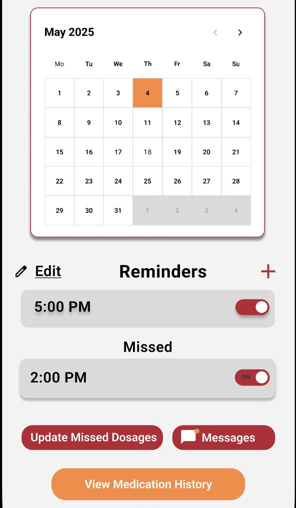
2. Accessible, adaptable interface
Addresses: General usability barriers for aging users
Let users adapt the interface to their vision
Problem: Fixed UI with small text and low contrast excludes users with visual or cognitive impairments.
Decision: High-contrast task cards, four primary nav destinations, and accessibility settings (text size, bold text, high-contrast mode) in Profile with live preview.
Interaction: Slide to adjust text size or toggle high-contrast mode before saving. Familiar bottom nav and large toggles reduce memorization.
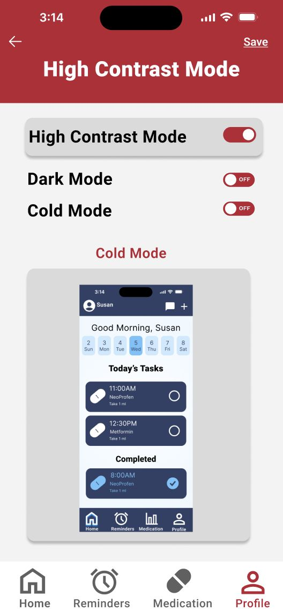
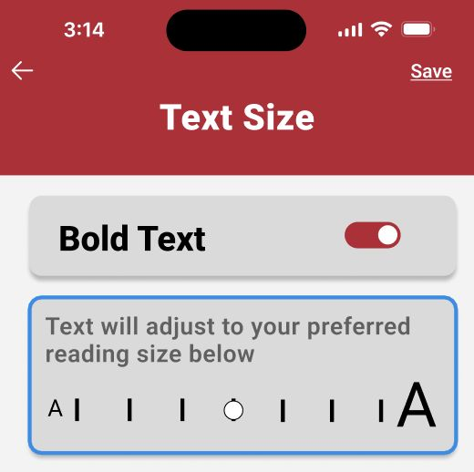
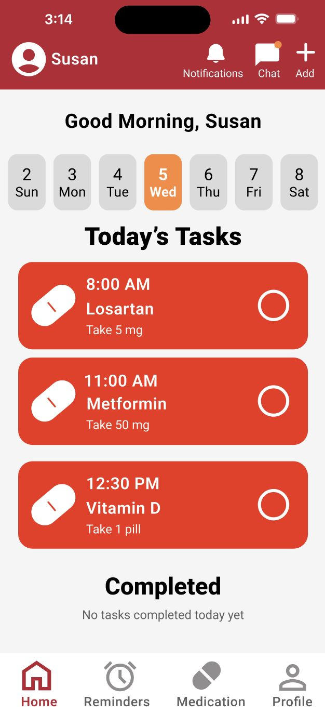
3. Personalization and caregiver connection
Addresses: Fragmented communication and lack of personalized support
Centralize reminders, contacts, and AI support
Problem: Users switch between apps for reminders, caregiver contact, and immediate help with medication questions.
Decision: Familiar alarm-page patterns for managing reminders, built-in doctor and caregiver contacts with messaging, and an AI companion for immediate answers. Multiple ways to add medication: typing, scanning, or provider import.
Interaction: Manage reminders from a calendar view, message contacts in-app, or ask the AI companion without leaving the app.
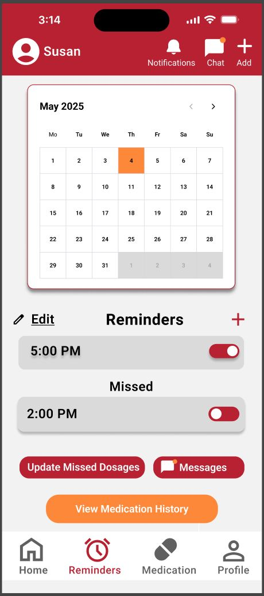
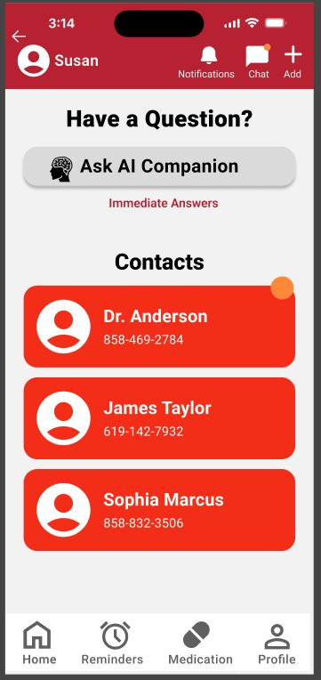
Prototype
Our team linked lo-fi and hi-fi frames in a clickable Figma prototype and recorded a narrated video walkthrough.
What We Would Improve
Our final critique identified these documented limitations. None were implemented in the deliverables.
- Text-heavy medication pages: dense information could cause cognitive overload; progressive disclosure or AI simplification would help.
- Too many steps in some flows: icons, tooltips, smart defaults, or scan-based input could reduce friction.
- Underutilized AI assistant: currently on one page; a persistent icon with proactive suggestions would increase its value.
- Limited caregiver intervention: providers can monitor but not intervene directly; dedicated dependent sign-in flows would expand their role.
- Inconsistent visual design: button styles and transitions vary; a stronger design system would improve predictability.
Reflection
Daily Dose pushed our team to design for users whose needs differ sharply from our own. Grounding features in published research and HCI principles kept the project focused on interaction behavior, not just visual polish.
The 12.7-step average in existing adherence products set a clear benchmark. Making dose status visible, limiting alarm controls, and placing accessibility settings where users can discover them were deliberate responses to documented gaps.